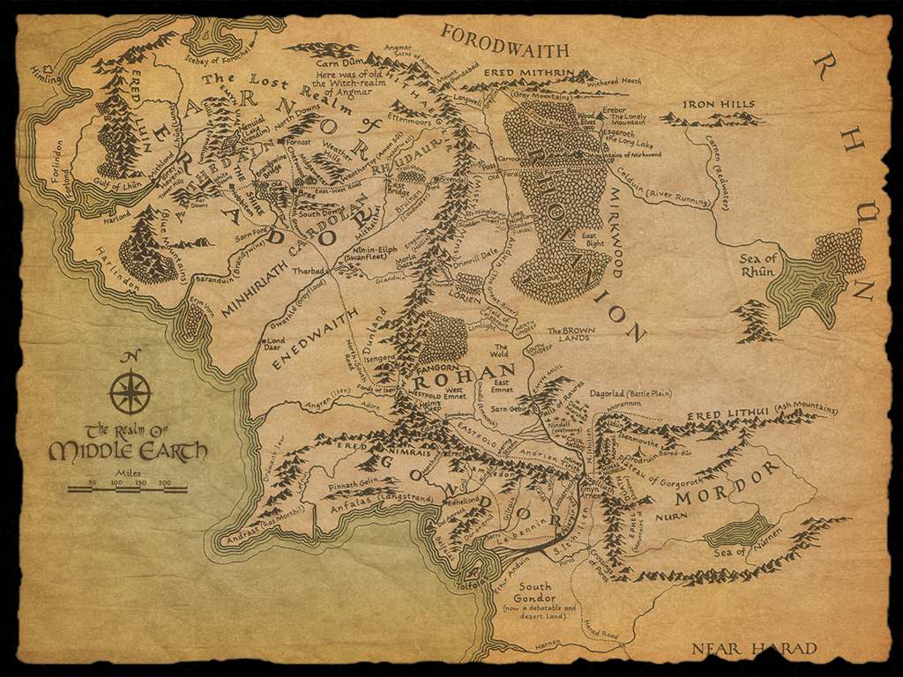

Hobbiton es una de las villas principales de La Comarca, cercana a Delagua, situada en la Cuaderna del Oeste y casi en el centro geográfico del país de los hobbits. Es famosa en toda la Comarca por ser una de las aldeas más antiguas de la misma, además de ser cuna de algunos de los hobbits más famosos de la historia de la Tierra Media, tales como Bilbo y Frodo Bolsón, y Samsagaz Gamyi.
Rivendel. Fundado en 1697 de la Segunda Edad por Elrond , que huía de la destrucción de Eregion con los supervivientes de los Gwaith-i-Mírdain; la mayoría de los Elfos de Rivendel eran Eldar, incluyendo a los grandes señores Gildor y Glorfindel.En la ciudad se desarrolló el Concilio de Elrond el 25 de octubre de 3018 de la Tercera Edad, en el cual se decidió el destino del Anillo y se escogieron los nueve miembros de la Comunidad del Anillo.
Mordor es un país situado al sureste de la Tierra Media, que tuvo gran importancia durante la Guerra del Anillo por ser el lugar donde Sauron, el Señor Oscuro, decidió edificar su fortaleza de Barad-dûr para intentar atacar y dominar a todos los pueblos de la Tierra Media. Se trata de una región desolada, rodeada de montañas con un interior desértico sin vegetación.
Isengard, también conocida como Angrenost «Fortaleza de Hierro», fue una fortaleza situada en el extremo sur de las Montañas Nubladas.Fue una fortaleza de Gondor durante la Tercera Edad, en ella se encontraba una de las Palantiri. Allí habitó el mago Saruman durante los últimos años de la Tercera Edad, y fue en Isengard donde creó un gran ejército para intentar apoderarse del Anillo Único y dominar la Tierra Media.
Rohan es un reino fundado por los Hombres del Norte, los Eorlingas, que ocupa las grandes llanuras cubiertas de pastos situadas al norte de las Montañas Blancas y al este de las Montañas Nubladas. Sus habitantes descienden de los hombres de Éothéod, y se caracterizan por ser amantes de los caballos y por ser los principales aliados del reino de Gondor.
Moria «Pozo Oscuro» es el nombre que reciben las más grandes minas construidas por los Enanos en la Tierra Media. También conocida como Khazad-dûm (mansion de los enanos), la Mina del Enano, fue durante mucho tiempo el símbolo del poderío del pueblo Enano, siendo un gran centro de comercio y minería a pesar de encontrarse algo alejada de otras minas enanas. Fue el más antiguo y famoso de los reinos de los enanos.